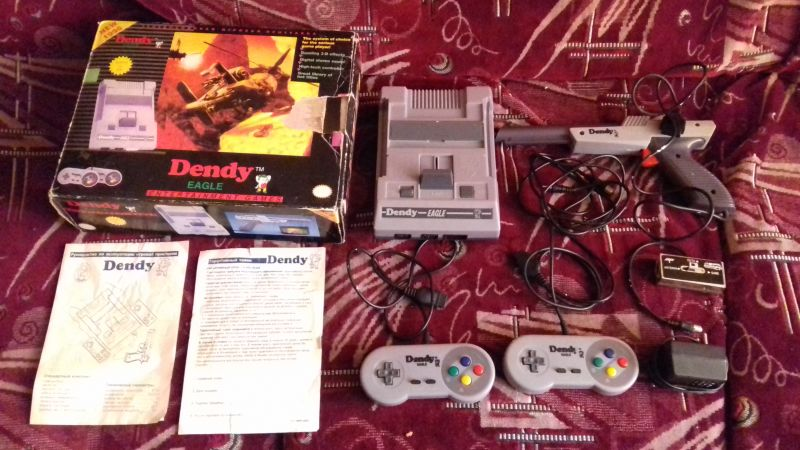

| Произведён | Не раньше 22 июля 1995 года |
| Процессор | ???(безкорпусный аналог MOS-6502 NTSC) |
| Зеленит | Нет |
| Встроенные игры | Не имеет |
| Количество слотов для картриджей | 1 |
| Стандарт картриджа | Японский Famicom 60 пинов |
| Звуковой процессор | Нормальный |
| Количество пинов геймпадов | 9 |
| АВ-выход | Работает |
| Антенный выход | Работает |
Dendy Eagle
Dendy Eagle - клон Nintendo Famicom, который пытается быть подделкой под "фирменные" приставки Dendy от компании Steepler. Однако же на деле является сторонним фамиклоном, который по дизайну, названию и прочим атрибутам пытается быть схожим с приставками Денди от Стиплера. Если судить по маркировке платы внутри приставки, выпущена была не раньше чем 22 июля 1995 года, хотя на коробке написан 1996 год, а на одной из бумаг в комплекте вообще 2000-ый.
Судя по информации на корпусе MODEL NN 3600/SY 700 - удалось узнать, что с аналогичной маркировкой, схожим дизайном и комплектацией выпускалась другая приставка - Rambo TV Games USA( не путать с клоном Atari 2600 - Rambo TV Game ). Скорее всего у обоих консолей один и тот же производитель. Фирму производителя установить не удалось, но удалось узнать место производства - Гонконг.
Приставка была куплена у Сергея Ореанора в двух экземплярах, однако же работоспособным оказался только один, второй при подключении начал дымить из слота питания, поэтому от греха подальше выключил и унёс.
Является достаточно редкой подделкой приставки Dendy, до приобретения видел такую всего два раза.
Комплектация была весьма неплохая:
Коробка
Сама консоль
Документы
Два геймпада, копирующие по форме джойстики от Super Nintendo
Пистолет, по форме копирующий Zapper от NES
Блок питания
Антенный кабель
Антенный переключатель
На коробке изображается арт из игры Desert Strike, несколько видоизмененный, а также имелись надписи на русском языке+ скриншоты игры Mortal Kombat для Super Nintendo, обложки изданий игр для Famicom, скриншоты из Терминатора и Аладдина по бокам. Имеются также значки Seal Of Quality, которые явно копировались с оригинального значка качества Нинтендо.
Сама приставка копирует оригинальный дизайн Famicom, единственное отличие - цвета, темно серых оттенков. Надпись Dendy исполнена более жирными буквами, логотип также присутствует. Имеет два 9-ти пиновых порта для джойстков и 15-ти пиновый слот расширения.
Внутри в приставке используется три маленьких платы, всё техническое исполнение клона сделано на бескорпусном кристалле, вместо микросхем. На плате имеет надпись 22 07 1995, что говорит о приблизительном времени изготовления данной приставки.
Сама приставка в отличии от множества клонов Famicom в нашей стране - внезапно работает в NTSC скорости, при этом выдает PAL-изображение. Скорее всего речь идёт о PAL-60.
В комплекте имелись документы, которые пытались копировать собой Стиплеровский гарантийный талон и руководство по эксплуатации, однако оба используют глянцевую бумагу. И на руководстве по эксплуатации не отмечается конкретная модель а написано просто DENDY, при этом надписи сделаны синей краской, а не стандартной чёрной. В остальном не отличаются от оригинальных.
Имелись два геймпада, которые по форме копируют собой джойстики от Super Nintendo с не самым удачным расположением клавиш А и Б.
В комплекте также был пистолет, который копирует по форме Zapper от приставки NES, что не являлось редкостью среди пиратских клонов Famicom`a. Имелся небольшой целик, который можно было повернуть в положение вертикально, а также криво исполненный логотип Денди.
Как и в случае с Bit 70 имеет нестандартный блок питания, где минус снаружи, а плюс внутри, при этом требует клон всё те же обычные 9 вольт.
Имелся также антенный переключатель, весьма обычная вещь. И конечно же сам кабель подключения приставки по антенному проводу. Скажем честно, на 96 год это, как мне кажется уже неактуально было.
Не было в комплекте комплектующего картриджа, судя по всему им должен был быть 9999в1, однако какая из версий узнать не удалось. В нашем музее таких 9999в1 как минимум несколько штук.
Приставка совершенно спокойно работает по антенному входу, и соответственно по AV также работает. На удивление даёт очень качественную и цветастую картинку на выходе. Но при этом имеет удешевленное качество звука, и это несомненно её минус.
Автор статьи и автор музея также уже делал обзор данного клона, с последующим тестом многих картриджей на ней, можно посмотреть вот по этой ссылке:
https://www.youtube.com/watch?v=nUV14xceBho